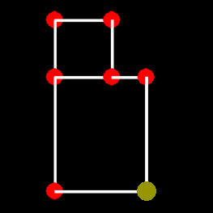
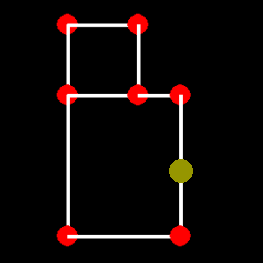
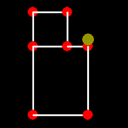
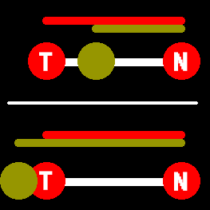

... Pacman Code ...
... Pacman Code ...
Section 3: Moving From Node To Node
Setup
So the whole point of creating the node map was to constrain Pacman's movement so that he can only move from node to node and nowhere else. This section will show you how to do that. This section is actually further divided up into three subsections because we're going to cover three types of node movement. All of which are good to know and used in this game. You can jump to the different sections by clicking on the links below or just read from the start.
- Movement 1:
- The simplest type of Node to Node movement. We just jump from Node to Node with no movement in between
- Movement 2:
- We show movement in between the nodes, but we will always stop on each node
- Movement 3:
- The super advanced Node to Node movement that Pacman and the Ghosts will use
Movement 1
Having a map of connected nodes is great, but now we have to teach Pacman how to move around the maze from node to node. The first type of movement we're going to teach him is simply jumping from node to node. For example, if he is on Node A and Node A has a neighbor to the LEFT called Node B, then if the player pressed the LEFT key, Pacman would immediately appear on Node B without any indication of movement between the two nodes. If Node A didn't have a neighbor to the LEFT and the player pressed the LEFT key, then nothing would happen. This really isn't how Pacman moves around the maze, but it's a first step and has a lot of useful applications and we'll actually use it for some of the things in the game like menu selection and such. Let's just dive right into the necessary code changes we need to make. Surprisingly, there isn't that much we need to modify.
Modify the pacman.py file
Modify the __init__ method
The first thing we're going to modify is the pacman.py file. We need to pass in the list of nodes that make up the maze. Instead of specifying a random pixel position vector for Pacman to start out on we need to tell him which node we want him to start out on. Right now it doesn't matter so we'll just have him start out on the first node, so we set his position to be the same as that nodes position. So nodes is a list of the complete maze and node is the node that Pacman is currently on. Then we call a method called setPosition. We also introduce a temporary variable called "keyDown". The only reason we have this is so Pacman will only move one node at a time with each key press.
self.node = nodes[0]
self.setPosition()
self.keyDown = False
Create new method called setPosition
All this method really does is copy the node's position to Pacman's position. We call the copy method because we don't want the same position object associated with Pacman and the node. If it is then modifying Pacman's position will also modify the nodes position. The node will basically follow Pacman around. So instead we copy the position which gives us a fresh new vector to represent Pacman's position.
def setPosition(self):
self.position = self.node.position.copy()
Modify the update method
In the update method we're going to temporarily comment out the position update. This is only temporary to show you this type of movement though. We also remove the else condition at the end of all of the elif's since we don't make Pacman stop based on key presses. From here on out we'll make him stop via conditions in the code.
def update(self, dt):
#self.position += self.direction*self.speed*dt
Modify the moveByKey method
We're going to modify the moveByKey method by first checking that the direction isn't equal to the STOP vector and that any keys are being held down. If the direction is not STOP and a key is being held down, then we need to check further that the node Pacman is currently on has a neighbor in that direction. If there isn't a neighbor in that direction, then we don't do anything. If there is a neighbor in that direction, then we set that neighbor as Pacman's current node and call the setPosition method. We then set the keyDown variable to True so that Pacman will only move one node with every key press.
def moveByKey(self, direction):
if self.node.neighbors[direction] is not None:
if not self.keyDown:
self.direction = direction
self.node = self.node.neighbors[self.direction]
self.setPosition()
self.keyDown = True
Changes in the gamecontrol.py file
Modify the startGame method
In the gamecontrol.py method we're going to modify the startGame method so that we pass in the nodeList into the Pacman object. We also change it so we create the nodes first, so create the Pacman object after we create the nodes.
def startGame(self):
self.nodes = NodeGroup()
self.nodes.setupTestNodes()
self.pacman = Pacman(self.nodes.nodeList)
Modify the checkEvents method
In the checkEvents method we're going to temporarily modify it so that we can check for when the user releases the key. In which case we reset the keyDown variable to False again.
def checkEvents(self):
for event in pygame.event.get():
if event.type == QUIT:
exit()
elif event.type == KEYUP:
self.pacman.keyDown = False
Movement 2
So we have Pacman jumping from node to node and that's a great first step. What we really want is to actually see him moving in between the nodes as well. In this part we'll have him move in between the nodes, but he'll always stop on each node even if a key is being pressed. This isn't the final movement for Pacman, but just the next step to fully understanding how he moves within a maze of nodes. Below is the progression of what we want to happen visually. Once we have a good visual understanding of what we want to accomplish it will be easier to program.
Here is our sample maze with Pacman in the lower right corner. There are only 2 possible directions he is able to move: UP and LEFT. We'll assume the player wants Pacman to move UP.
In this image we see that the player has pressed the UP key which makes Pacman move UP towards the nodes UP neighbor. Any other key presses won't have any effect on Pacman while he is moving in between two nodes. 
Eventually Pacman will overshoot the node he is trying to reach. Once we detect this we move Pacman onto the node he was moving towards and make him STOP.
In order to understand Pacman can overshoot a node and how we check for it I have this image on the right. I have two nodes labeled 'T' and 'N'. These letters stand for TARGET and NODE respectively. The TARGET node is always the node Pacman is moving towards. The NODE node is always Pacman's current node. Pacman is always either stationary on his current node or moving away from it. The top part of the image shows him moving away from his current node and towards the target node. The bottom part of the image shows the case of him overshooting the target node. In both cases we're comparing the length between the distance between the two nodes and the distance from the current node to Pacman. We can easily see that when the distance from the current node to Pacman exheeds the distance from the current node to the target node, then Pacman has overshot the target node.
Changes in the pacman.py file
Modify the __init__ method
First off, get rid of all instances of the keyDown variable in this file and in the gamecontrol.py file. We don't need it anymore since it was only to show how the first type of movement worked. Then we'll add the target to the pacman.py file after defining the self.node variable. The target node is usually the node Pacman needs to move towards, but if Pacman is stationary on a node then the target node and his current node are the same node. In other words, the target node can never be None.
def __init__(self, nodes):
...
self.target = self.node
New method called overshotTarget
This new method checks to see if Pacman has overshot the target node he is moving towards. The image above shows visually how we know he has moved past his target node by just comparing the distances as described. If Pacman's distance is greater or equal to the distance between the two nodes, then we say that he has overshot the target node. Notice that we use the magnitudeSquared method because we're just comparing two distances so we can avoid taking a square root. This method will just return True or False.
def overshotTarget(self):
vec1 = self.target.position - self.node.position
vec2 = self.position - self.node.position
node2Target = vec1.magnitudeSquared()
node2Self = vec2.magnitudeSquared()
return node2Self >= node2Target
Modify the moveByKey method
The only changes we need to make here is to remove the setPosition method because we don't want to make Pacman jump from node to node. Also, instead of setting his new node to be the neighbor node in that direction like we did before we set it as the target node. Basically, when the user presses a valid key in a valid direction and Pacman is STOPPED (which means he is resting on a node), then set the keyed direction as his new direction and set the node that is the neighbor in that direction as the target node.
def moveByKey(self, direction):
if self.direction is STOP:
if self.node.neighbors[direction] is not None:
self.direction = direction
self.target = self.node.neighbors[direction]
Modify the update method
We want to uncomment out the first line where we update the position. Then after we detect the key presses we'll check to see if we overshot the target node by calling the method we just wrote. If we did overshoot the target node, then we set our current node as the target node and make Pacman STOP since that's the point of this type of movement. Also remove the statement in the else where we STOP Pacman if a key isn't being pressed, and replace it with pass. We'll add code here later. But from now on we want to have Pacman move in a direction all by himself without the player having to hold down the key.
def update(self, dt):
self.position += self.direction*self.speed*dt
direction = self.getValidKey()
if direction:
self.moveByKey(direction):
else:
pass
if self.overshotTarget():
self.node = self.target
self.setPosition()
self.direction = STOP
Movement 3
It's important that you understand the previous two types of node movement before diving into this one. This one builds upon the previous type of movement. In the previous movement we had Pacman move around from node to node smoothly. However, he always stops on each node. We also can't change his direction when he is traveling between two nodes. In this section we'll change his movement so that he'll only stop on a node if he can't continue on to another node in the direction he is moving, otherwise he'll move past the node. We'll also change it so that he can reverse direction at any time. Once we're done with this section we'll have the completed movement for Pacman. What's really nice is that no matter what maze layout we use, this code will always stay the same.
Changes in the pacman.py file
New method called reverseDirection
We're going to create a new method called reverseDirection which will allow Pacman to reverse direction at any time. We first change his direction to be opposite to the direction he was moving in. You would think that since we're dealing with vectors it would be easier to just multiply the direction by -1. It is true that UP * -1 == DOWN and LEFT * -1 == RIGHT, however, if I'm trying to reference a direction in the neighbor's dictionary then this won't work. For example, let's say that Node A has a neighbor dictionary with UP as one of the keys. That UP vector is a specific object and if I create another UP vector, then that's not the same vector. When dealing with dictionaries the keys are unique objects even if they look the same. That's why we can't just multiply the direction by -1 to reverse the direction. After we change the direction we just simply swap the target and node values.
def reverseDirection(self):
if self.direction is UP: self.direction = DOWN
elif self.direction is DOWN: self.direction = UP
elif self.direction is LEFT: self.direction = RIGHT
elif self.direction is RIGHT: self.direction = LEFT
temp = self.node
self.node = self.target
self.target = temp
New method called moveBySelf
Pacman largely moves by himself without any human intervention. This method should be called when the user isn't pressing any keys telling him where to go. First off, we check to see if he is STOPPED. If he is, then we don't need to do anything, but in case he is moving we have the rest of the code. If he is moving then we need to check to see if he has overshot his target. Remember, that when he is moving he always has a target to move towards. If he has not overshot a target then we don't need to do anything further because he'll just keep moving towards that target until he does overshoot it. When he does overshoot a target we set that target as his current node. We then check to see if he can continue in his current direction by seeing if his new node has a neighbor in that direction. If he can continue in that direction, then we set his new target as the node that's connected to his current node in that direction. If he can't continue in his current direction then all he can do is STOP and rest on top of the current node waiting for further instructions from the player.
def moveBySelf(self):
if self.direction is not STOP:
if self.overshotTarget():
self.node = self.target
if self.node.neighbors[self.direction] is not None:
self.target = self.node.neighbors[self.direction]
else:
self.setPosition()
self.direction = STOP
Modify the update method
In this method we're just going to replace pass with the moveBySelf method. Also delete the overshotTarget stuff below it.
...
if direction:
self.moveByKey(direction)
else:
self.moveBySelf()
Modify the moveByKey method
This method is similar to the moveBySelf method except we have to take a few more things into account. At any time either this method or the moveBySelf method will get called depending on if the player is pressing a valid key or not. If the player is pressing a valid key, then this method gets called to deal with that key press. We first check to see if Pacman is at rest on a node or not. If he is at rest on a node (not moving), then we simply check to see if there is a neighbor node in the direction the player is indicating. If not then we don't need to do anything, but if there is we set that node as the target node and set his direction as the direction the player is indicating. Remember, to make Pacman move you just have to give him a direction. If Pacman is moving then we need to check for a couple of things. First we check to see if the player is trying to reverse Pacman's direction by seeing if Pacman's current direction is opposite to the direction the player is indicating. If it is then we just call the reverseDirection method we defined earlier. We then check to see if Pacman has overshot his target. If he hasn't overshot his target, then we don't need to do anything further. When he does eventually overshoot his target then we set that target as his current node. We then need to determine his next direction. The direction that the player is indicating takes precedence so we check to see if there is a neighbor node in the direction the player is indicating. If there is a neighbor node in that direction then we set that node as the target. We then check to see if that direction happens to be the same direction in which we are moving. If it is then we don't need to set Pacman's position on top of the node, but if it isn't then we do set his position to be on top of the node. Then we set his new direction as the indicated direction. If there isn't a neighbor node in the direction the player is indicating, we then check to see if there is a neighbor node in Pacman's current direction which may or may not be the same direction the player is indicating. If there is a neighbor node in Pacman's current direction we set that node as the target. We don't need to set the direction since that doesn't change. If there isn't a neighbor node in that direction, then the only thing we can do is have him STOP on the node and wait for further instruction from the player.
def moveByKey(self, direction):
if self.direction is STOP:
if self.node.neighbors[direction] is not None:
self.target = self.node.neighbors[direction]
self.direction = direction
else:
if direction == self.direction * -1:
self.reverseDirection()
if self.overshotTarget():
self.node = self.target
if self.node.neighbors[direction] is not None:
self.target = self.node.neighbors[direction]
if self.direction != direction:
self.setPosition()
self.direction = direction
else:
if self.node.neighbors[self.direction] is not None:
self.target = self.node.neighbors[self.direction]
else:
self.setPosition()
self.direction = STOP
Conclusion
Now we have Pacman constrained to a map of nodes and moving just like we want him to move. If we really wanted him to move like he does in the actual games then we would deal with cornering. If you don't know what cornering is, then don't worry about it. If you do know what it is then you can try to modify the code above to make use of cornering. I don't really care about it, but I do decide that it is necessary then I'll try and figure out how to program it. Maybe you can figure it out and let me know. But in the meantime, now that we have Pacman moving the way we want him to move let's put him in a bigger maze. The size and layout of the maze shouldn't matter. However, if you remember the last section, it was a lot of work to lay down these nodes by hand and there's only 7 of them. In an actual Pacman maze there could be up to 100 nodes. We don't want to program all of those by hand, we could but that is extremely tedious work. Any time we have tedious work we try to figure out a way to make the computer do it for us. That is what the next section is all about. How to generate a Pacman maze automatically.
File Structure
- Pacman
- constants.py
- gamecontrol.py
- pacman.py
- stacks.py
- vectors.py